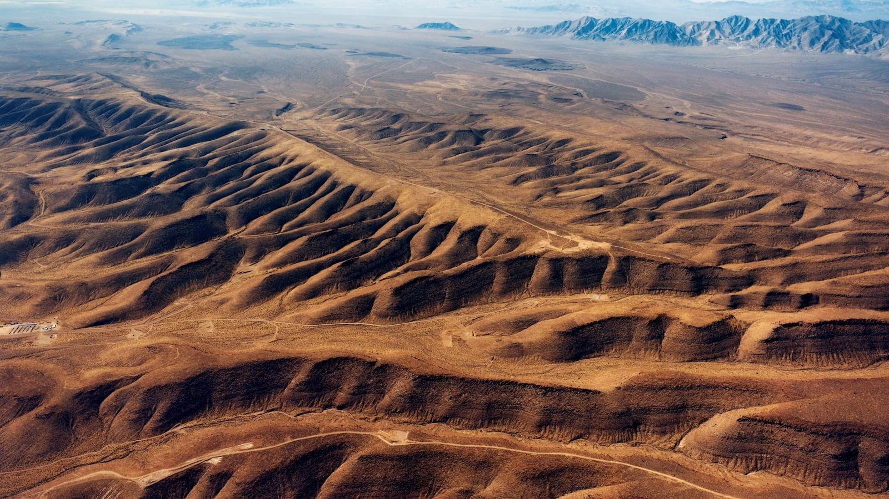

Ballot initiative · ECON 238 Week 7 · Ryker Mirabella
Let's Screw Nevada. Then Let's Pay Nevada.

Yucca Mountain, Nye County, Nevada. Photo: U.S. Department of Energy.
The proposition
Proposition 7: Finish Yucca Mountain, and Pay Nevada for It
The ballot question
Shall Congress direct the U.S. Department of Energy to finish licensing and building the Yucca Mountain nuclear waste repository in Nevada, begin moving commercial spent nuclear fuel there by 2040, and pay the State of Nevada $500 million a year from the Nuclear Waste Fund, starting when construction begins and continuing while the repository accepts waste?
A YES vote means all three happen: a license, first shipments by 2040, and yearly payments to Nevada.
What's the deal?
What we're buying: one permanent home for the nation's nuclear waste. About 95,000 metric tons of spent fuel sit at reactor sites, nearly all beside rivers, lakes or oceans, including Ginna on Lake Ontario. Yucca would hold it 1,000 feet under a dry desert ridge.
What we give up: an untouched stretch of desert, and Nevada's veto.
Who benefits: communities next to stored waste, and taxpayers, who have paid utilities $11.1 billion to hold it and owe $37.6 to $44.5 billion more.
Who bears the costs: Nevada, and towns along the shipping routes.
Who pays: electricity customers, through the $49.5 billion Nuclear Waste Fund. Nevada gets $500 million a year, about $150 per resident.
Scale: $96.2 billion over 150 years (DOE, 2007 dollars), and about 9,500 rail casks over 50 years.
The best case for YES
Every option for nuclear waste costs something. The question is which costs least. Yucca is the only site in America that has already been studied for decades, tunneled and reviewed by federal regulators, whose staff concluded in 2014 that it meets safety requirements for up to a million years. The new volunteer plan has no site, needs a new law and would start that science from zero, while waste keeps piling up and taxpayers keep paying utilities to hold it.
Paying Nevada fixes the real mistake of 1987. Congress offered $10 to $20 million a year and expected Nevada to take it. $500 million a year is 25 times more. If Yucca is worth tens of billions of dollars to the rest of the country, it is worth paying the one state that carries it.
The best case for NO
For the first time, states are volunteering. In July 2026 the Department of Energy named five finalists (Idaho, Utah, Louisiana, Oklahoma and Tennessee) from 28 applications in 26 states, for campuses that would manage spent fuel and bring up to $50 billion in investment. Why force waste on the one state that has said no for nearly 40 years when others are asking for it?
Forcing it may not even work. Nevada has fought Yucca in court and in Congress since 1987 and would keep fighting, and a project that depends on outlasting a state can stall again after the next election. Yucca also needs about 2,800 trains and 2,650 truck shipments across more than 40 states. And money is not consent: Nevadans did not ask to be paid. They asked not to be chosen.
Where is the body buried?
Yucca is too small. The law caps it at 70,000 metric tons, but the country already has about 95,000, so Congress would have to raise the limit or find a second site anyway. The price is old too: DOE's $96.2 billion is in 2007 dollars, and Nevada puts it near $119 billion. The license case still has open questions, including whether DOE controls the land it needs. And the Western Shoshone say the land is theirs under an 1863 treaty.
Why isn't this already happening?
Concentrated costs, diffuse benefits. Nevada carries nearly all the risk, so Nevadans fight hard. The benefits are spread across dozens of states, so nobody fights hard for it. Nevada also held power at the right moments: Harry Reid became Senate Majority Leader in 2007, and Yucca's funding ended in 2010. Nevada is a swing state, so presidents of both parties have backed away, including Trump in 2020.
The cost of doing nothing is hidden. Payments to utilities come from the Treasury's Judgment Fund, not the Energy Department's budget, so no agency feels them. And Congress must still approve spending from the Nuclear Waste Fund, so money ratepayers already paid counts as new spending.
The old deal was force plus pennies. In 2026 the White House is betting on volunteers instead.
Sources
- Spent fuel on hand (about 95,000 metric tons) and the July 2026 DOE finalists: KUNC, July 30, 2026; Pahrump Valley Times, Aug. 5, 2026.
- White House plan to move past Yucca toward volunteer states: E&E News, July 27, 2026.
- Nuclear Waste Fund balance of $49.5 billion: DOE Nuclear Waste Fund FY2024 financial report.
- $11.1 billion paid to utilities and $37.6 to $44.5 billion future liability (DOE Inspector General audit): Morgan Lewis, Dec. 2024.
- NRC staff finding of safety for up to a million years: ENR, Oct. 2014.
- $96.2 billion lifecycle cost estimate: NucNet, 2008.
- Shipments (9,500 rail casks, 2,800 trains, 2,650 trucks), routes across 40+ states, $119 billion cost and open license issues: Nevada Commission on Nuclear Projects, 2025 report.
- 1987 offer of $10 to $20 million a year: Texas Observer, June 1988. The 1987 law: Nuclear Waste Policy Act.
- Judgment Fund payments and Nuclear Waste Fund scoring: Congressional Research Service testimony, 2015.
- Western Shoshone claim: Las Vegas Sun, 2019.
Nevada's population (about 3.3 million) is used to turn $500 million a year into about $150 per resident. I used an AI (Claude) to help research and draft this page, and checked each number against the sources above.